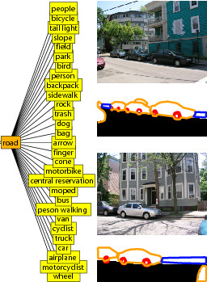
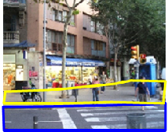
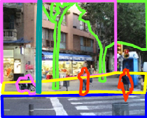
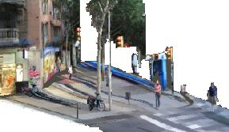

Building a Database of 3D Scenes from User Annotations
Bryan Russell, and
Antonio Torralba
IEEE Conference on Computer Vision and Pattern Recognition (CVPR), 2009
(paper.pdf)
How to get good 3D models?
When you label objects and their location in an image, the tool uses the labels to build a 3D model of the scene. The tool does not require from you any knowledge about geometry, as all of the 3D information is automatically inferred from the annotations. For instance, the tool will know that a 'road' is a horizontal surface and that a 'car' is supported by the road. The tool learns to go from 2D to 3D using all the other labels already present in the database. The more images that are labeled, the better models the tool will learn.
In order to get good 3D and pop-up models of your pictures, it is important to try to label accurately. For each object that you label, the tool will ask you to enter the name. The system will use this name to decide which 3D model to use.
Start labeling the ground: Ground objects (such as the "road", "sidewalk", "floor", "sea", etc) are used to define the basic structure of the scene. If you use the correct names, the system will recognize them and automatically place them in the correct location in the 3D scene.
Complete objects behind the occlusions: When labeling objects, try to complete the objects behind the occlusions. This is important so that the tool can reconstruct the 3D contact points. In the example on the right, the sidewalk is delineated as if the people were not there.
Follow the outline of each object: The more accurate the boundaries and the object names are, the better the 3D model will look. In addition, these annotations will be used to build a large database of annotated images to train computer vision algorithms to recognize everyday objects.
How does it work?
The tool learns two kinds of scene representations from all the annotated images: a qualitative model of the relationships ("part-of"', "supports'') holding between scene components ("sidewalk'', "person'', "car''), and a rough 3D shape model for some of these components, obtained from multiple segmented images of their instances. These models are combined with geometric cues (depth ordering, horizon line) extracted from the photograph being analyzed to construct the final scene description.
To illustrate the above, consider when we (as humans) see a person against a wall. We know that the person is not physically attached to the wall because people are not parts of walls. We have learned this from many images in which we see the co-occurrence of people and walls. We also know that windows are parts of walls. Therefore a window overlapping with a wall is not a window resting against the wall, it is actually attached to it. Again, we know this because we exploit the information coming from many images and how walls and windows relate to each other. These relationships influence (and are influenced by) our interpretation of geometric image cues.
In addition, statistical evidence may guide the interpretation of edge fragments as occlusion boundaries, contacts between objects, or attachment points. For instance, a chimney is part of a house. However, only the lower part of the boundary is attached to the house, with the rest being an occlusion boundary. On the other hand, a window is a part of a house, with all the edges attached to the building and having no occlusions. As a final example, a person is always in contact with the road. However, a person is not part of the road, which causes the points of contact to not be points of attachment.
Related work
There are a number of previous works from which we have taken inspiration:
Y. Horry, K.I. Anjyo and K. Arai. "Tour Into the Picture: Using a spidery mesh user interface to make animation from a single image". ACM SIGGRAPH 1997 (website)
A. Criminisi, I. Reid, and A. Zisserman. "Single View Metrology". Proceedings of the 7th International Conference on Computer Vision, Kerkyra, Greece, 1999. (website)
D. Hoiem, A.A. Efros, and M. Hebert, "Automatic Photo Pop-up", ACM SIGGRAPH 2005. (website)
A. Saxena, M. Sun, A. Y. Ng. "Learning 3-D Scene Structure from a Single Still Image". In ICCV workshop on 3D Representation for Recognition (3dRR-07), 2007 (website)
This work is the result of a collaboration between the Computer Science and Artificial Intelligence Laboratory at MIT and the INRIA (Willow project-team, Laboratoire d'Informatique de l'École Normale Supérieure, ENS/INRIA/CNRS UMR 8548). Funding for this research was provided by National Science Foundation Career award (IIS 0747120).

List of objects supported by the road. This list is automatically inferred from the annotations available in the LabelMe dataset.



The 3D models can be downloaded and played outside of this tool using any VRML viewer.